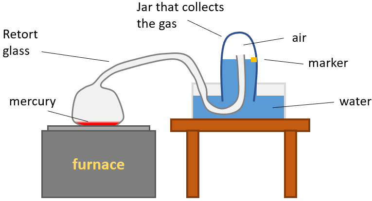

Antoine-Laurent de Lavoisier (26 August 1743 - 8 May 1794), also Antoine Lavoisier after the French Revolution, was a French nobleman and chemist who was central to the 18th-century chemical revolution and who had a large influence on both the history of chemistry and the history of biology. It is generally accepted that Lavoisier's great accomplishments in chemistry stem largely from his changing the science from a qualitative to a quantitative one. Lavoisier is most noted for his discovery of the role oxygen plays in combustion. He recognized and named oxygen (1778) and hydrogen (1783), and opposed the phlogiston theory.[1]
Joseph Priestley (24 March 1733 - 6 February 1804) was an English chemist, natural philosopher, separatist theologian, grammarian, multi-subject educator, and liberal political theorist.[2]
In October 1772, Lavoisier set out to explain the longstanding puzzle of why metals gain weight when they form calxes. Lavoisier conducted a series of public experiments, relying on a huge burning lens that focused the sun's rays to produce intense heat.[3] Lavoisier found that a calx of lead, mixed with charcoal and heated by the sun's rays, gave off a large amount of air as it turned back into metallic lead. This suggested that air, or some part of the air, might somehow responsible for calxes being heavier than expected. Lavoisier also found that when he burned elements like sulfur, they, too, gained weight, apparently by absorbing the same gas.[3]
In England, Priestley had begun to study a curious substance called the red calx of mercury. When heated, this red powder turned back into liquid mercury and gave off a gas. Priestley collected the gas, expecting it to be "fixed air," which would put out a candle. To his surprise, this gas did just the opposite. It made candles burn bigger and brighter than ordinary air. Priestley was at a loss to explain this finding - and eager to share it with all who would listen.[3]
On a trip to Paris two months later, Priestley was invited to dine with the members of the Royal Academy of Sciences. Lavoisier listened with great interest as Priestley described the curious new air he'd discovered. Could this be the gas he'd been looking for - the one involved in rusting and burning? After Priestley left, Lavoisier hurried to the local apothecary to buy his own sample of mercury calx and begin his own experiments on it.[3]
Meanwhile back in England, Priestley continued to explore his new gas. Since it supported fire, he wondered, might it also support breathing? To find out, he trapped a mouse under a glass vessel containing the new air. To his amazement, the mouse seemed perfectly at ease long after it would have died in normal air.[3]
Lavoisier put four ounces of mercury into a long-necked glass called retort. The neck of the retort glass was confined in a bell jar, while the liquid level in the bell jar was adjusted to leave 50 cubic inches of air in the bell jar.[4]
The furnace was ignited and the apparatus was heated. There was no change observed during the first 24h but after 48h Lavoisier observed red spots on the surface of the mercury.[5] As the days passed, they grew bigger in size and number until it covered the whole surface. Meanwhile, the liquid level in the bell jar had increased, meaning that the amount of air inside was decreasing.[4]
Once the apparatus had cooled down, Lavoisier took the new measurements. He discovered that 8 cubic inches of gas weighing exactly 3.5 grains (0.23 grammes) had "disappeared" from the bell jar. The mercury + calx in the retort flask has gained exactly 3.5 grains. When he tested the gas left in the bell jar he found that it had lost its "active" ingredient. It no longer supported combustion or respiration.[5]
Lavoisier argued that the mercury had taken an active gas from the air to produce the calx,[4] but, as Priestley has found, calx heated alone produces an active gas and Mercury. Will the calx heated alone lose 3.5 grains, and will the air gain 3.5 grains? Lavoisier proceeded to find out. He took the mercury and calx from his first experiment and separated the calx from the pure mercury.[4] The mercury calx was placed in a retort flask over the furnace. The apparatus was assembled as in the first experiment but the liquid in the bell jar was brought up to a higher level.[5]
As the calx was being heated, a grey mist soon formed, and drops of liquid mercury was seen inside the retort glass, while the calx itself was slowly disappearing.[4] The volume of the gas in the bell jar had increased by 8 cubic inches and and the weight by 3.5 grains. Tests on the gas in the bell jar showed that it was "active" - it supported combustion and respiration.[5] He also found that the weight of the mercury that was formed was 3 and a half grains lesser than the calx.[4]
Because the "active gas" produced an acidic gas after a candle had burnt in it (tested with litmus paper), Lavoisier named the "active gas" oxygen (from the Greek meaning acid producer).[5]
Sources: